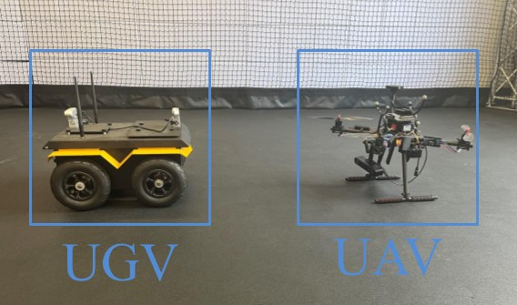
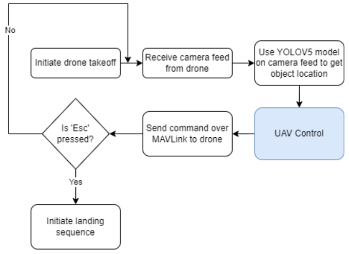
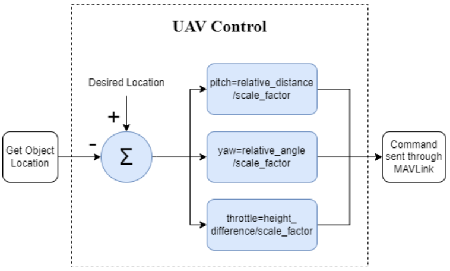
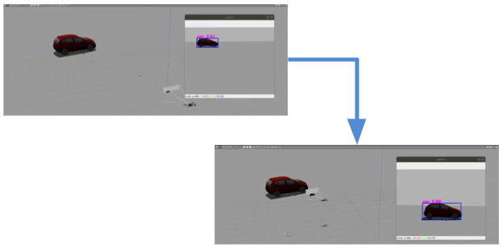
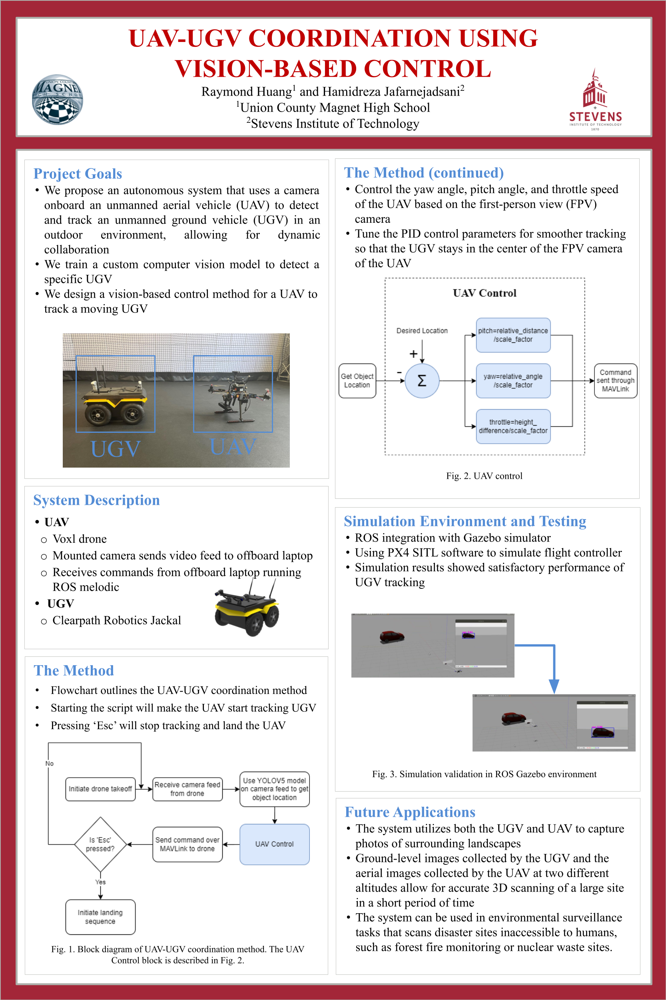

UAV-UGV coordination using vision-based control

How it works
The goal was a drone that keeps a moving ground robot in view using only its onboard camera, so the two can work together outdoors. Longer term, the pair could photograph a site from the ground and from the air to build 3D scans of places people can't safely reach, like wildfire or nuclear waste sites.
The drone streams its camera feed to an offboard computer running ROS. There, a YOLOv5 model I fine-tuned to recognize the robot finds it in each frame, and camera geometry turns the bounding box into an estimate of the robot's position relative to the drone.

A C++ ROS node compares that position with where the robot should be in the frame and turns the error into three commands: pitch from the distance, yaw from the angle, and throttle from the height difference. PID controllers smooth each one so the robot stays centered in the camera view, and the setpoints go to the flight controller over MAVROS.

Testing
I built a Gazebo test environment with PX4 software-in-the-loop, so the real flight controller code ran against a simulated, camera-equipped drone and a moving ground vehicle. Most of the PID tuning happened here, until the drone could follow smoothly at a set distance.

The system was only tested in simulation. Flying it on the real drone and Jackal was the next step.
Poster2024 IEEE MIT URTC
